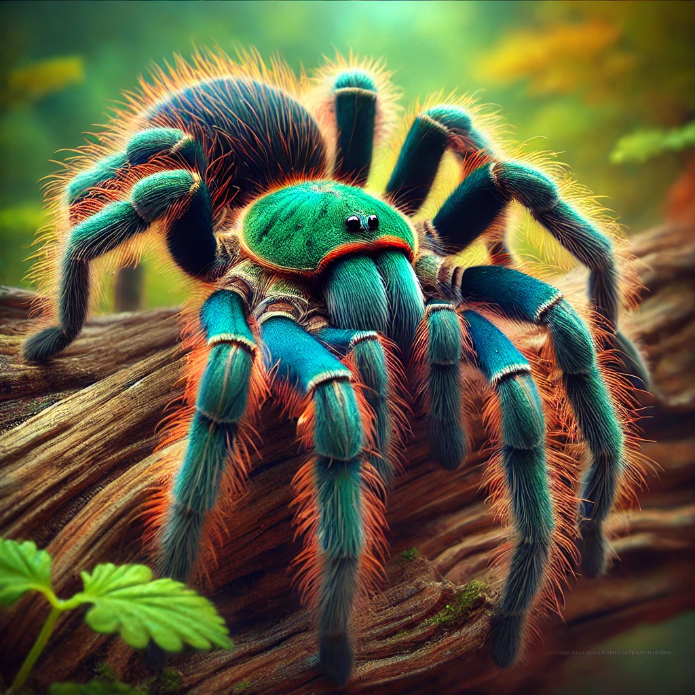

Green Bottle Blue (Chromatopelma cyaneopubescens) Care Guide
Overview
The Green Bottle Blue is an eye-catching tarantula species, known for its bright colors. Native to Venezuela, it is a relatively hardy tarantula, making it suitable for both beginners and experienced keepers.
Habitat
In captivity, the Green Bottle Blue requires a well-ventilated enclosure with a substrate of peat moss or coco fiber. Provide hiding spots using cork bark or similar materials. Maintain humidity levels between 60-70% and temperatures between 24-28°C (75-82°F).
Feeding
Feed your tarantula a diet of live insects such as crickets, roaches, or mealworms. Juveniles should be fed 2-3 times a week, while adults can be fed once a week.
Behavior
This species is generally docile but can be defensive if threatened. It is known for its beautiful colors, which are especially vivid in well-maintained specimens.
Additional Care Tips
Regularly clean the enclosure to prevent mold and mite infestations. Ensure the enclosure has proper ventilation to avoid humidity-related issues.